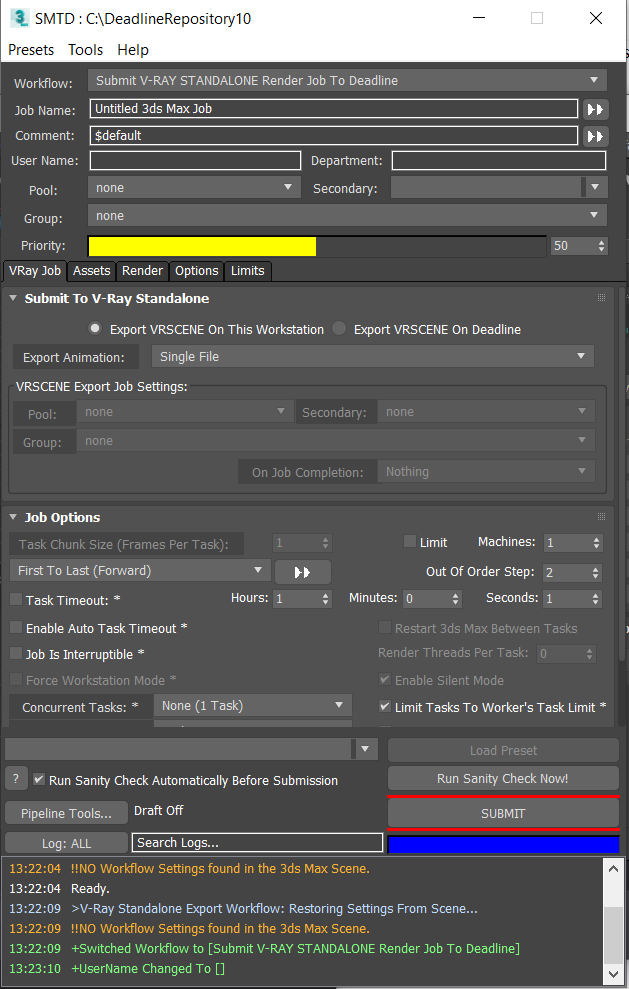

3ds Max - Integrated Submitter Workflow - V-Ray Standalone¶
V-Ray Standalone Workflow Overview¶
The V-Ray Standalone workflow lets you export the 3ds Max scene to VRSCENE format and submit for rendering with V-Ray Standalone on any supported OS.
Accessing The Workflow¶
This workflow will only be accessible in SMTD if the V-Ray for 3ds Max plugin has been installed on the workstation.
To use the workflow, select the Submit V-RAY STANDALONE Render Job To Deadline entry from the Workflow: drop-down list on top of the SMTD UI.
User Interface
The workflow adds a VRay Job tab
It contains a custom Submit To V-Ray Standalone rollout
It features the standard Job Options rollout with some controls disabled.
It features the standard Job Failure Detection rollout with no changes.
The standard Assets, Render, Options and Limits tabs will also be available with most of their default content.
The Render tab only features the relevant Scene Tweaks and 3ds Max Startup rollouts.
Submit Button Behavior
The SUBMIT button of SMTD will be disabled if the current renderer is not set to V-Ray
Custom User Interface Controls¶
Export Mode radio buttons
These radio buttons determine where the VRSCENE export will be performed.
Export VRSCENE On This Workstation - the
.vrscenefile will be exported locally by the submitting workstation.Export VRSCENE On Deadline - the
.vrscenewill be exported by a MAXScript Job run on a Deadline Worker.
Export Animation drop down
Controls the style of export to use when exporting an animation sequence.
Single File - The entire animation will be exported into a single
.vrscenefileFile Per Frame - Create one
.vrscenefile for each frame in the animation. Each.vrscenefile will be self-contained. If you are exporting the.vrscenefiles on Deadline, this mode enables frame dependencies between the export and render job for increased parallelism. When the animation is sparse, such as animating world space transformations, this mode can consume more storage space than the File Per Frame (Incremental) export animation mode. For heavily animated scenes (e.g. animated geometry), this mode is faster and more space efficient.File Per Frame (Incremental) - Creates an initial
.vrscenefile for the first frame which contains all of the initial geometry, materials, and renderer settings..vrscenefiles created for subsequent frames will reference the first frame and only specify differential changes for the frame. For simple animations, such as world space transformations, this mode can reduce the size of the.vrscenefiles. This style of export is incompatible with frame dependencies. Rendering of all frames will depend on the first.vrscenefile. When the scene is heavily animated (e.g. using animated geometry modifiers) this export mode degrades and Files Per Frame is preferential.
VRSCENE Export Job Settings group of controls
These controls are only applicable in Export VRSCENE On Deadline mode.
They provide the alternative Pools, Group and On Job Completion options for the
.vrsceneExport Job.
Export Details¶
Export VRSCENE On This Workstation mode:
The
.vrscenefile will be exported to the folder specified as render output in the 3ds Max Render Setup dialog.
Export VRSCENE On Deadline mode:
The 3ds Max scene will always be saved and submitted with the job, regardless of the relevant SMTD control.
The
.vrscenefile will be exported to the folder specified as render output in the 3ds Max Render Setup dialog.
Workflow Script Files¶
This workflow consists of two script files:
SMTDWorkflow_VRayStandaloneExport.ms - the workflow definition
MAXScriptJob_VRayStandaloneExport.ms - the MAXScript Job file to be run by the Workers to perform the
.vrsceneexport.